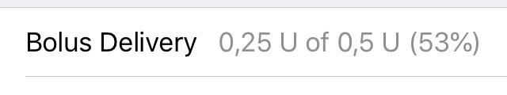

Utilisateurs Omnipod
Votre Loop ne montre pas grand chose initialement jusqu'à ce qu'on lui donne quelques réglages de base. La première étape va consister à ajouter une pompe à Loop. Si vous utilisez la pompe Omnipod, vous pouvez continuer sur cette page. Si, par contre, vous utilisez une pompe Medtronic, veuillez continuer sur cette page.
Sélectionner le type de pompe
Commençons par cliquer sur le bouton de réglages de Loop dans la barre d'outils en bas de votre app Loop. Il ressemble à un petit pignon. Sur l'écran des réglages qui s'ouvre, cliquer sur Ajouter une pompe et sélectioner l'option Omnipod qui apparaît.

Sélectioner le RileyLink
Une liste de tous les RileyLinks aux alentours va s'afficher dans l'écran de configuration du RileyLink. Sélectionez votre RileyLink en faisant glisser le bouton pour qu'il s'affcihe vert puis pressez le bouton bleu Continuer en bas de l'écran. Si votre RileyLink n'apparait pas, assurez-vous que l'interrupteur est allumé (interrupteur glissé vers le haut en direction de l'attache porte-clés du boitier) et que la batterie est chargée.
Limites de débit et basales
L'écran suivant va vous demander deux informations :
-
Les limites de débit : les limites de débit concernent à la fois votre taux de basale maximum et votre bolus maximum. Votre taux de basale maximum va limiter l'aggressivité de Loop pour traiter les glycémies élevées avec les basales temporaires. Typiquement, les nouveaux utilisateurs doivent rentrer une valeur d'environ 3 fois leur plus haut débit basal programmé jusqu'à ce que leur confort et leur expérience avec Loop s'améliore.
-
Débits basaux : Entrez vos débits basaux programmés, en commençant à minuit. Du au contraintes du POD, les débits basaux programmés ont un maximum de 24 entrées, les entrées à 0 u/h ne sont pas autorisées et le taux augmente par tranche de 0.05 u/h.
Quand vous avez fini d'entrer ces valeurs, pressez le bouton bleu Continuer en bas de l'écran des réglages du pod pour continuer sur les prochaines étapes de configuration du POD.
Appairer le POD
- Placer le POD à proximité du RileyLink
- Remplissez le POD avec l'insuline au moins jusqu'à ce qu'il bip (remplissage minimum de 80 unités)
- Cliquer sur le bouton
Appairer - Attendez pendant que la barre de progression de l'amorçage se termine
- Pressez le bouton
Continuerquand la rond bleue confirme que l'amorçage s'est terminé

Insérer la canule
- Préparer votre site d'insertion
- Enlever la protection de l'aiguille du POD et le support de l'adhésif.
- Si la canule est bien caché à l'intérieur du pod , appliquez le POD sur le site de perfusion. Si la canule dépasse, pressez
annulerdans le coin supérieur droit de l'écran et essayez avec un nouveau POD. - Pressez le bouton
Inserer la canule. - Écoutez les clics remplissant la canule, attendez que l'insertion et que la barre de progression se termine. Le nombre de clics de l'insertion peut varier. La canule va se déployer avant que la barre de progression se termine.
- Vérifiez que la canule s'est bien déployée en regardant à travers le judas sur le POD.
- Pressez le bouton
Continuer

Rappel d'expiration
Finissez la configuration en choisissant le rappel d'expiration par défaut (2 heures avant les 3 jours complets d'utilisation) ou choisissez un moment qui vous convient mieux. La notification apparaitra sur votre écran de vérouillage et fera vibrer votre téléphone à ce moment. La configuration est terminée et votre POD est prêt à être utilisé dès lors que vous pressez le bouton final.
Réglages du POD
Dès que la configuration du POD est terminée, vous allez vous retrouver sur l'écran des réglages du POD. Cet écran va vous fournir diverses informations importantes sur votre POD. Vous pourrez toujours revenir sur cet écran plus tard en tapant sur l'image de l'Omnipod dans vos réglages Loop.

Informations liées à l'appareil
La première section indique depuis quand le POD est actif, la date d'expiration, le temps restant et des informations d'identification du POD (si vous devez appeler le support client pour une panne de POD).
Commandes
Il y a deux commandes que vous pouvez envoyer au POD avec Loop.
- Suspendre la distribution : cette commande va susprendre toute distribution d'insuline : basales, basales temporaires et bolus en cours. Quand vous pressez "Suspendre la distribution", toute distribution sera suspendue indéfiniment.
Une bannière d'avertissement apparait sur l'écran principal de Loop quand la distribution d'insuline est suspendue.
Vous devrez presser Toucher pour reprendre dans la bannière ou le bouton Reprendre la distribution dans les réglages du POD pour reprendre le débit basal programmé et permettre à Loop de reprendre son activité. Les distributions de bolus ne seront pas continuées, si elles avaient été interrompues.
- Remplacer le POD : cette commande doit être utilisée pour désactiver un POD avant de le remplacer.
Configuration
- Rappel d'expiration : vous pouvez changer le rappel d'expiration à un moment qui vous convient mieux pour avoir une notification pour remplacer le POD. En utilisant les réglages par défaut, Loop règle le rappel à 3 jours complets. Vous pouvez régler le rappel à n'importe quel jour et heure jsuqu'à 80 heures. Cela change du PDM qui règle une alerte toujours 2 heures avant les 3 jours complets (72 heures). Cela suppose que vous n'allez pas tomber à cours d'insuline avant ce moment. Dans le cas où cela arrive, vous aurez une notification "POD vide".
- Changer le fuseau horaire : Si vous voyagez pour une courte période, vous n'avez pas à vous occuper de changer l'heure de votre POD. En revanche, si vous allez être loin de chez vous pour une plus longue période, vous allez vouloir mettre à jour la programmation de basale de votre POD pour qu'elle corresponde à l'heure locale en séléctionant la commande
Changer le fuseau horairequand cela vous convient. Utiliser cette commande va décaler la programmation de basale sur votre POD à une nouvelle heure. Si vous démarrez un nouveau POD, le nouveau fuseau horaire sera utilisé. S'il vous plait, attendez de voirRéussiapparaître sur la page pour être sûr que la commande a bien été reçu par le POD.
- Commande de test : Cette commande est utilisée uniquement par les développeurs pour tester les commandes Omnipod dans Loop. Elle exécute actuellement une commande "Récupération du statut" et peut être utilisée pour avoir plus de détails à l'écran si besoin ou pour forcer une erreur pour générer un rapport d'incident après avoir eu un POD qui sonne.
Statut
Cette section fournit des informations sur le statut de votre POD.
- Distribution du bolus : cette ligne indique le % de progression en cas de bolus en cours.

- Débit basal: Cette ligne indique quel débit est actif : le débit basal normal programmé, le débit basal temporaire de 30 minutes ou si le POD est suspendu.
- Alarmes : si votre POD sonne à cause d'une alarme, cette ligne donne des informations sur l'alarme. En cliquant sur cette ligne, vous pouvez effacer ou mettre en "snooze" l'alarme.

- Réservoir : les pods ne fournissent pas le volume d'insuline restant dans le réservoir jusqu'à ce qu'il reste 50 unités restantes. Donc, typiquement vous allez voir "50+ U" à cette ligne pour un moment avec un nouveau POD.
- Insuline délivrée : Cette ligne donne le montant total d'insuline, à la fois basale et bolus, délivrée par le POD depuis qu'il a été activé.
Prochaine étape : ajouter un CGM
Bravo ! Vous avez ajouté votre POD à l'app Loop. Maintenant, cliquer sur le bouton Done dans le coin supérieur droit dans vos réglages de pompe pour retourner sur les réglages de Loop. La prochaine étape est d'ajouter un CGM à votre app Loop. Après tout, sans données CGM, votre Loop ne loopera pas.